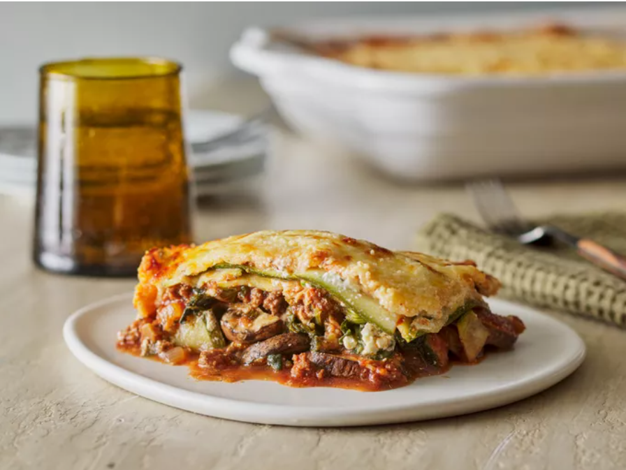

Lasagna

Make this zucchini lasagna recipe for a delicious low-carb dinner that'll satisfy
your Italian food craving. It's perfect in the summer with garden-fresh veggies
and herbs, or in the winter when you need a comforting meal. You won't even miss the
noodles in this one!
Ingredients
- Zucchini
- Seasonings
- Beef
- Fresh produce
- Frozen spinach
- Tomato products
- Wine
- Cheese
- Egg
Steps
- Slice, salt, and drain the zucchini.
- Make the meat sauce.
- Make the tomato sauce.
- Make the ricotta mixture.
- Assemble the zucchini lasagna according to the detailed instructions in the recipe.
- Bake according to the recipe.